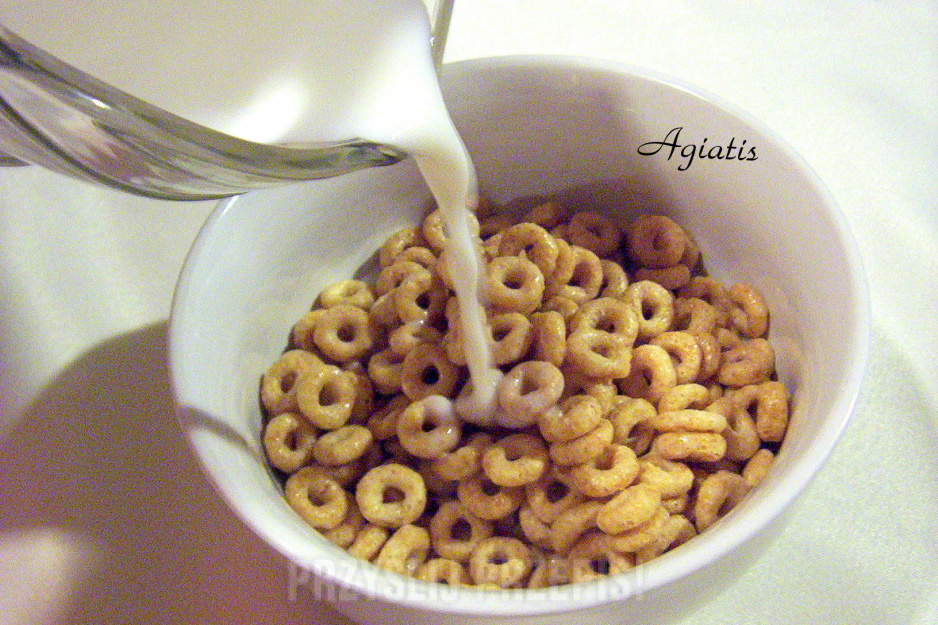

Płatki z mlekiem
Opis
Kiedy jesteś zbyt leniwy, żeby nawet kanapkę sobie zrobić.
Składniki
- Płatki
- Mleko
- Opcjonalnie: cukier
Sposób przygotowania
- Mleko wlać do miski.
- Miskę włożyć do mikrofali na około 30 sekund
- Do mleka wsypać płatki. Ponarzekać, że użyło się za duzo mleka.
- Opcjonalnie: dodać cukru.